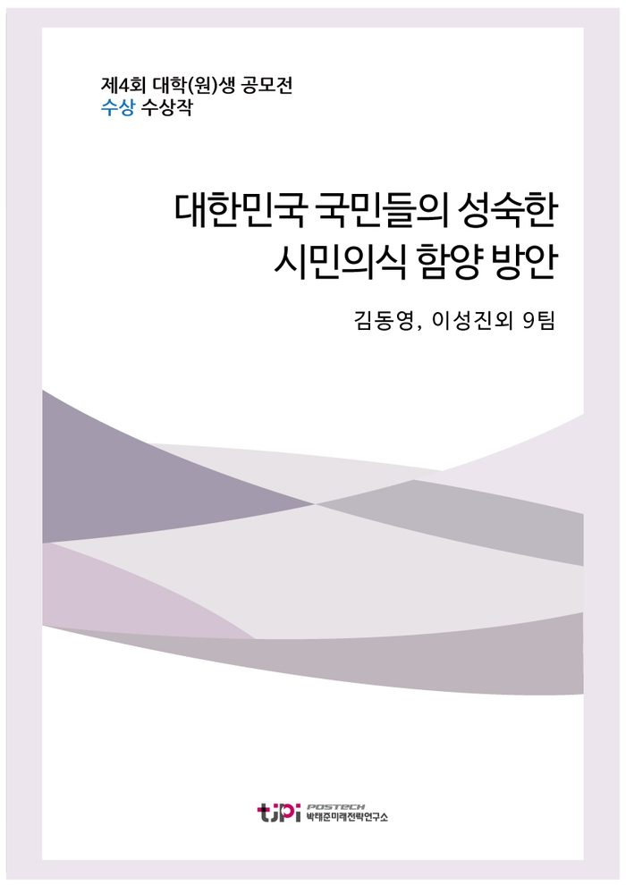

저자 김동영, 이성진외 9팀보도일 2017.08.01

요 약
2017년 우리나라 국민들의 시민의식은 어디까지 왔을까.
그지난 3개월에 걸쳐 박태준미래전략연구소는 전국 대학생 및 대학원생들을 대상으로 지금보다 더 나은 한국사회를 위해 "우리나라 국민들의 시민의식 수준을 진단하고, 보다 성숙한 시민의식 함양을 위한 구체적인 방안을 제시하시오."라는 주제로 공모전과 토론회를 개최하였다.
구체적인 방안에 대한 미흡한 점은 있지만 아직 배움을 계속하고 있는 학생이라는 점을 감안한다면 위 주제에 대한 문제의식과 그 해결방안에 대한 그들의 생각은 대한민국 사회발전에 큰 디딤돌이 되기에 충분했다.
장려상을 수상한 10팀의 에세이는 약 A47장 분량의 짧은 글을 통하여 현 시대를 살아가는 젊은이들의 생각을 담아내고 있다.
본 연구소에서는 같은 주제를 저명학자들에게도 의뢰하였으며, 다가오는 12월 중순 포럼에서 연구결과가 발표 될 예정이다.
청년들의 생각과 전문가들의 생각을 모두 들어 볼 수 있는 소중한 기회가 되리라 생각되며, 대한민국 사회와 국민들의 시민의식 발달에 큰 밑걸음이 되길 기대한다.
목 차
[에세이 장려상 수상작 10편]
1. 우리가 만들어나가는 시민사회_ 김동영, 이성진
2. 읽기의 중요성 _ 김주선
3. 한국 교육 과정 내 Law-related Education (LRE) 도입 확대의 필요성 _ 박도원
4. 다문화 사회의 시민의식; 배제하는 시민에서 더불어 사는 시민으로 _ 박현진
5. 애덤 스미스는 틀렸다 _ 서원준
6. 성숙한 시민의식을 통한 에너지 민주주의로! _ 손상용
7. 대한민국의 품격 _ 오경서, 최희원
8. 분리된 개인에서 더불어 사는 시민으로 - 주민참여제도의 개선을 중심으로 _ 윤수린
9. 건강한 사회를 위한 ‘함께 나아가기’ _ 장아름, 유영선
10. 우리나라 시민의식의 현주소와 구체적인 시민의식 함양 방안의 모색 _ 최시훈
내 용
[2017 청년 에세이 장려상 10편] 대한민국 국민들의 성숙한 시민의식 함양 방안
김동영, 이성진외 9팀